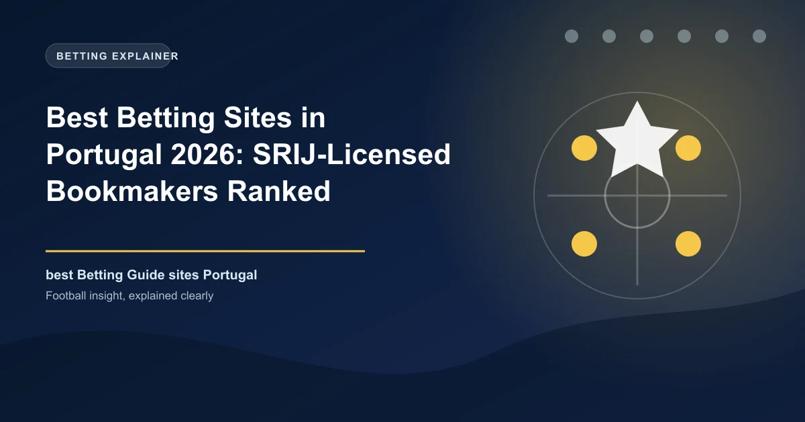

Best Betting Sites in Portugal 2026: SRIJ-Licensed Bookmakers Ranked

Portugal opened its online betting market in 2015 and runs it as a closed, licensed regime: every legal site holds an SRIJ registration, operates a .pt domain, and routes payments through Portuguese rails. Here are the best of them for 2026.

Portuguese football is famous and so is Portuguese betting. Since Decreto-Lei 66/2015 opened the market, every legal online bookmaker needs a licence from the SRIJ, the gambling inspection service inside Turismo de Portugal, and must operate from a .pt domain with payments routed through authorised Portuguese rails. It is a closed market by design - if a site is not on the SRIJ register it is illegal - and in 2026 it is booming: gross gaming revenue hit 1.21 billion euros in 2025 and growth accelerated through the first half of 2026.
Portugal Betting at a Glance
| Factor | Detail |
|---|---|
| Currency | Euro (EUR) |
| Regulator | SRIJ - Servico de Regulacao e Inspecao de Jogos (Turismo de Portugal), regime under DL 66/2015 |
| Legal online betting | Yes - closed market, 17 operators holding about 30 licences |
| Licence format | 3-year, renewable, per vertical; .pt domain required |
| Minimum age | 18 |
| Tax | Betting 8% of turnover (up to 16% above 30M+ euros); casino 25% of GGR; players' winnings tax-free |
| Payments | Multibanco, MB WAY, cards, bank transfer, Paysafecard, PayPal |
| Population | About 11.4 million |
| Main sports | Football - Primeira Liga; basketball, tennis |
Know the Rules: SRIJ and the .pt Regime
The Portuguese regime is deliberately controlled. A licence is issued by vertical (fixed-odds sports betting, games of chance, bingo, horse racing), runs for three years and is renewable, and each operator must incorporate in Portugal or the EU/EEA, operate exclusively on a .pt domain, hold a dedicated EU bank account for all player money, and keep reporting infrastructure in national territory. Deposits, winnings and bonuses are governed by rules that exist to keep the market inside Portugal - which is why foreign books such as a UK-registered bet365 cannot simply serve Portuguese players, and why the SRIJ has blocked thousands of illegal sites since 2015.
Anything not on the SRIJ register is illegal for Portuguese residents. That is not a formality: the SRIJ has issued around 3,000 site-blocking actions and hundreds of closure notices since the regime began, most recently including a blocked prediction market early in 2026.
Tax: Operators Pay, Players Do Not
Portugal taxes the operator, not the winner. Sports betting pays 8% of turnover, originally increasing progressively to 16% once turnover passes 30 million euros a year, while online casino pays a flat 25% of gross gaming revenue since the 2020 budget and poker rake is taxed at 35%. Player winnings from licensed operators are tax-free. The trade-off for players is a slightly tamer price on the board, but with payment, dispute and self-exclusion protection that no unlicensed site offers.
The Best Licensed Bookmakers in Portugal, Ranked
Licence numbers below come from the SRIJ register; check any brand directly on the SRIJ site before depositing.
| Operator | SRIJ Licence | What It Is Known For |
|---|---|---|
| Betano | Nos. 017-018 | Market leader, deepest Primeira Liga coverage |
| Betclic | Nos. 001-004 | First-mover, sharp prices and welcome value |
| Bwin | Nos. 002-006 | Broad sports depth and strong in-play |
| Solverde | Nos. 010-024 | Portuguese operator, casino and sports |
| 888 | No. 016 | International sports and casino offer |
| PokerStars | No. 005 | Poker leader with sports tie-in |
| Luckia / Casino Portugal | Nos. 014-015 / 007-009 | Established local brands |
Betano dominates the Portuguese board - it is the strongest brand for Primeira Liga, Champions League and international football, with Kaizen Gaming behind it - and it offers the fastest Multibanco and MB WAY payouts. Betclic was the original entrant and remains the sharpest alternative for value. Bwin is the all-rounder, Solverde the homegrown favourite linked to the Casino Solverde group, and 888, PokerStars, Luckia, ESCOnline and Placard round out a licensed field of about seventeen operators. Notably, several names you might expect - including a British bet365 and 1xBet - are not on the SRIJ register for Portugal, no matter what their advertising claims.
Payments: Multibanco and MB WAY Are Standard
Portuguese payment culture revolves around SIBS: Multibanco (the ATM reference system used mainly for deposits) and MB WAY (the mobile app used mainly for withdrawals) are accepted everywhere, alongside Visa and Mastercard, bank transfer, Paysafecard and PayPal. Under the regime, licensed operators may only accept electronic payments in euros through authorised payment service providers, with withdrawals to a payment account in your own name. That combination - regulated rails, real-name accounts, and SRIJ oversight - is the practical reason licensed sites are the only reliable option in Portugal.
The SRIJ Market in 2026
The market is growing fast: gross gaming revenue was about 1.21 billion euros in 2025 and hit 651.9 million in the first half of 2026, up 14% year on year, with roughly 4.9 million registered player accounts. Regulation is also tightening in player-friendly directions: a centralised national self-exclusion portal went live on 8 April 2026, and the SRIJ has opened consultations on cash-out and bet-builder rules and on slot bonus-buy caps. Expect the licensed field to keep consolidating around the big names while the SRIJ keeps pushing illegal sites and their payment channels out of reach.
Responsible Gambling in Portugal
Every licensed Portuguese operator must display the SRIJ responsible-gambling badge, offer self-exclusion and deposit limits, and connect you to the central self-exclusion portal that now covers the whole market. Bet within a fixed monthly budget, treat a winning streak as variance rather than skill run, and never chase losses. If betting stops being entertainment, the SRIJ's player-protection materials and the Portuguese gambling addiction service are the right places to start - both independent of the industry.
Frequently Asked Questions
Is online sports betting legal in Portugal?
Yes, and it is a closed market. Sports betting and online casino are legal exclusively for operators registered with the SRIJ that run a .pt domain and meet the requirements of Decreto-Lei 66/2015. Any site not on the SRIJ register is illegal.
Which betting sites are licensed in Portugal?
Seventeen operators hold about thirty licences, led by Betano (SRIJ licences 017-018), Betclic (001-004), Bwin (002-006), Solverde (010-024), 888 (016), PokerStars (005), Luckia (014-015) and Casino Portugal (007-009). The SRIJ publishes the register at srij.turismodeportugal.pt.
What are Multibanco and MB WAY?
They are Portugal's native payment rails operated by SIBS. Multibanco generates ATM bank references used mainly for deposits, while MB WAY is the companion mobile app used mainly for instant withdrawals. Both are accepted by every licensed Portuguese operator.
Do Portuguese players pay tax on betting winnings?
No. Winnings from licensed operators are tax-free for players. Instead operators pay the IEJO special gambling tax: 8% of turnover for sports betting, rising progressively to 16% above 30 million euros, and 25% of gross gaming revenue for online casino.
Why is bet365 or 1xBet not on your Portugal list?
Only SRIJ-registered operators may lawfully serve Portuguese players. Several internationally known brands, including the UK-facing bet365 and offshore 1xBet as well as sportingbet's Portugal-facing brand, are not on the current SRIJ licensed register, so they are not legal options for residents.
Put These Principles Into Practice Today
Every strategy on this page is only as good as the markets you apply it to. Check the latest predictions, odds, and in-play opportunities below.
Last updated: August 2026 | By Tochukwu Mesigo |
Build Winning Accumulator Tickets
Generate optimized accumulator combinations from today's data-driven predictions. Set your target odds and get instant ticket suggestions.
Pro Ticket Builder →